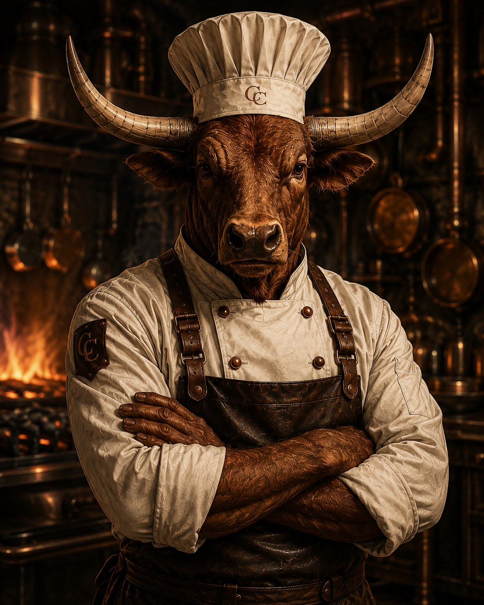
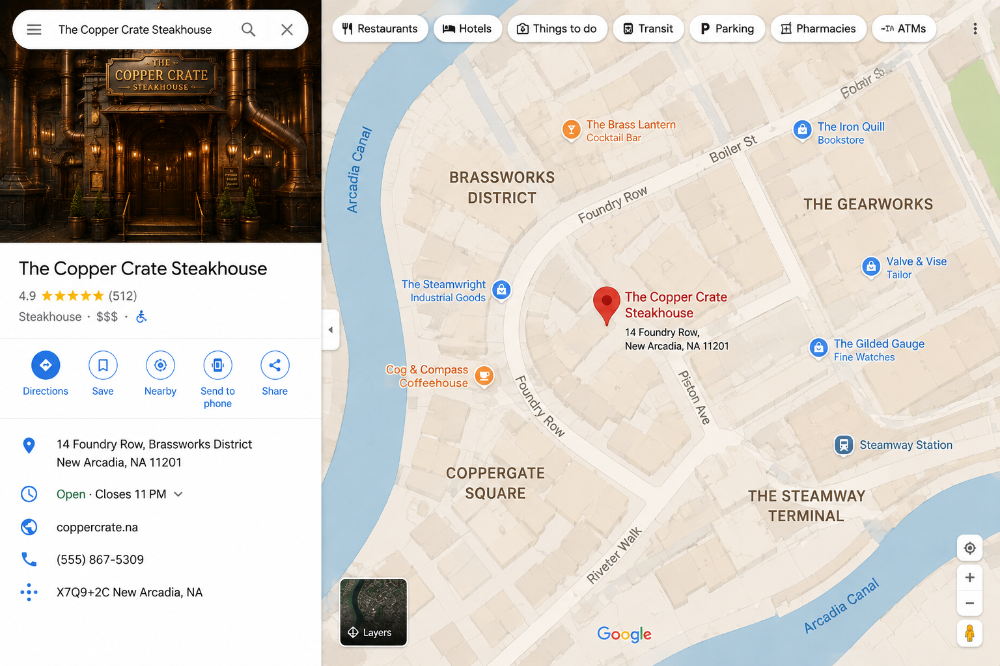

Est. 2026 • Fine Steakhouse
The Copper Crate
An extraordinary steakhouse where fire, craftsmanship, and the art of fine dining meet.

Meet The Chef
Chef Raxton "Bevo" Longhorn
Executive Chef • Pitmaster • Culinary Rebel
Chef Raxton "Bevo" Longhorn brings old-world steakhouse tradition together with the precision of modern open-fire cooking. His kitchen is built around exceptional ingredients, disciplined technique, and respect for the flame.
At The Copper Crate, Bevo leads a kitchen where every cut is prepared with purpose. His philosophy is simple: source the best, respect the process, and let the ingredient speak for itself.
“ It's an eat, or get eaten world. Great ingredients don't need fancy. They need respect, heat, and heart.”
— Chef B
Our Location
The Brassworks District
New Arcadia • Foundry Row
The Copper Crate sits in the heart of New Arcadia's historic Brassworks District, surrounded by copper towers, steam-powered workshops, and gaslit streets.
Once home to the city's master craftsmen, Foundry Row has become a destination for travelers, artisans, and diners searching for an unforgettable evening beside the fire.
14 Foundry Row
Brassworks District, New Arcadia
Tuesday – Sunday
5:00 PM – 11:00 PM
